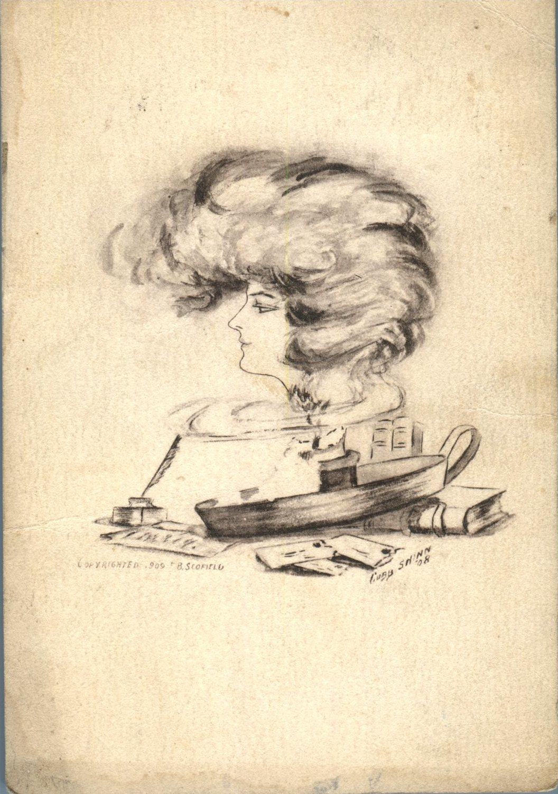
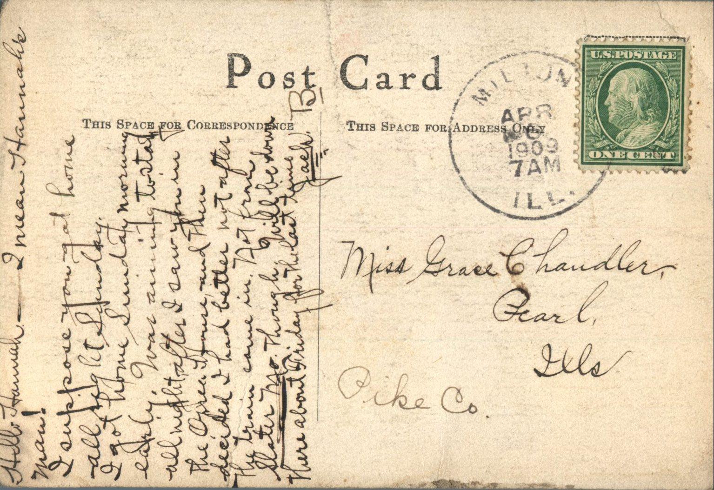
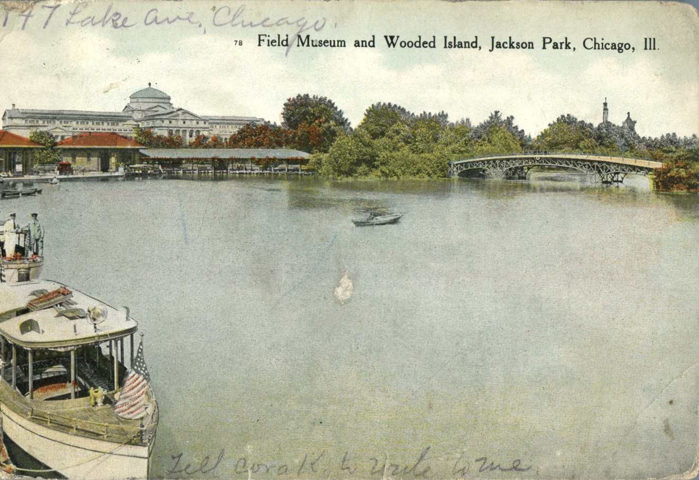
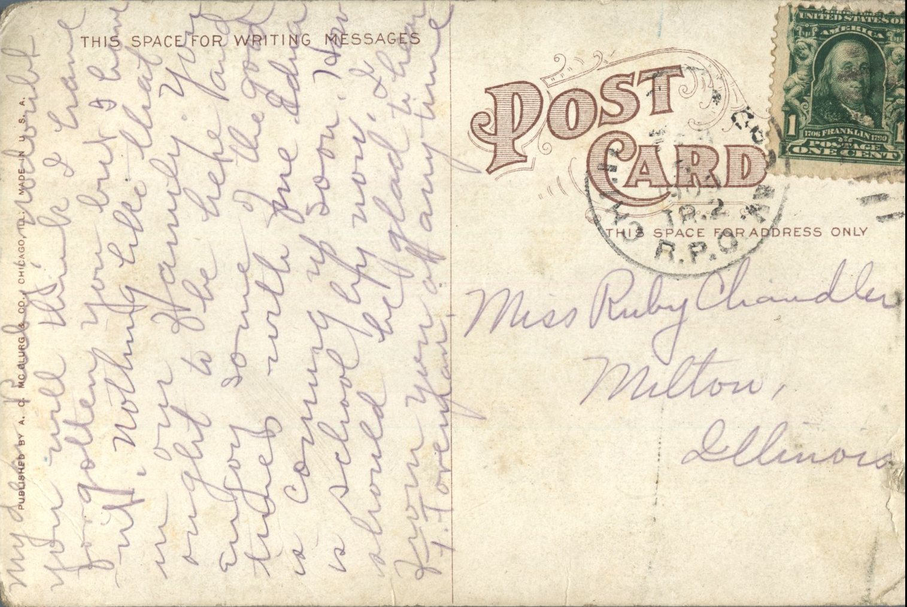
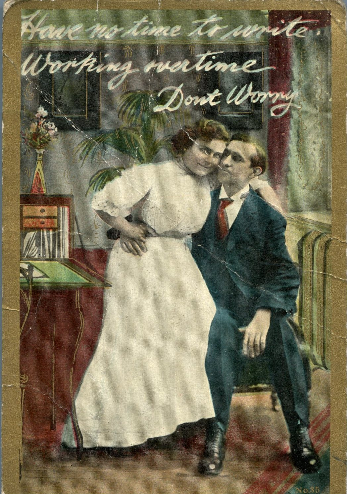
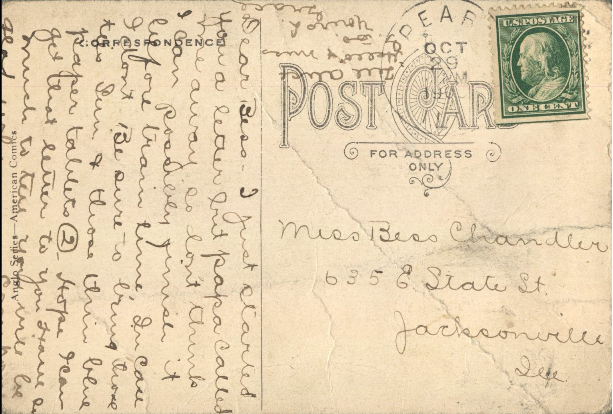
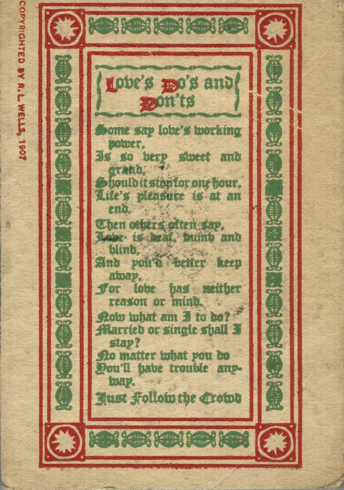
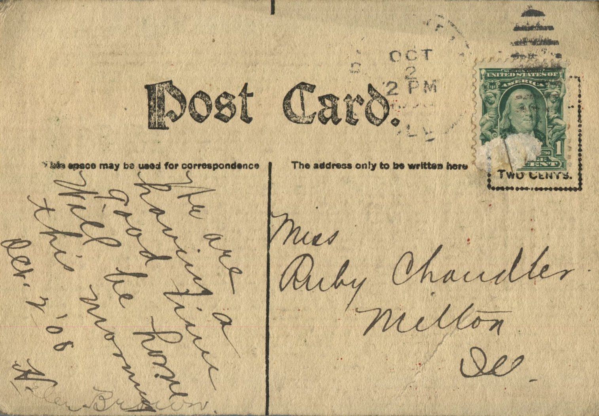

{kind=link}
{kind=link}
From: Unknown, To: Grace Chandler
{kind=link}
{kind=link}
From: Jack, To: Grace Chandler
 
{kind=link}
{kind=link}
From: Jake, To: Grace Chandler Mailed From: Milton, Illinois on April 6, 1909
Miss Grace Chandler Pearl, Illinois Pike County
Hello Hannah! I mean Hannah's ma! I suppose you got home all right Sunday. I got home on Sunday morning early. Was aiming to stay all night after I saw you in the Orell house and then decided I had better not after the train came in. Not from Slater, MO. Thought will be down there about Friday for the last time. Jack
From: F. Foreman, To: Ruby Chandler
 
{kind=link}
{kind=link}
From: F. Foreman, To: Ruby Chandler Mailed From: Chicago, Illinois in 1909 Picture Info: Field Museum and Wooded Island, Jackson Park, Chicago, Ill. Postcard Info: Published by A. C. McClurg & Co., Chicago, Ill. Made in U.S.A.
Miss Ruby Chandler Milton, Illinois
My Dear Ruby, Undoubtably, you think I have forgotten you ut I have not. Nothing like that in our family. You ought to be here and enjoy some of the good times with me. Edna is coming up zoo. How is school? By now, I should be glad to hear from you at any time. F. Foreman
Written on the Front: 4147 Lake Ave., Chicago Tell Cora K. to write to me.
From: Grace Chandler, To: Bess Chandler

 From: Grace Chandler, To: Bess Chandler
Postcard Info: Sole Distributer, Edward Gross, N.Y. (Series No.8)
Picture Info: Copyright, 1090, Moffat, Yard & CO, N.Y.
From: Grace Chandler, To: Bess Chandler
Postcard Info: Sole Distributer, Edward Gross, N.Y. (Series No.8)
Picture Info: Copyright, 1090, Moffat, Yard & CO, N.Y.
Miss Bess Chandler 116 Spaulding Place Jacksonville, Illinois
Dearie- Don't expect I'll be over tomorrow unless things take a decided change. Mom's sick in bed all day- G.E.C.
From: Grace Chandler, To: Bess Chandler
From: Grace Chandler, To: Bess Chandler
Mailed From: Pearl, Illinois on October 29, 1908
Postcard Info: Anglo Series - American Comics
Miss Bess Chandler 6356 State St. Jacksonville, Ill.
Dear Bess - I just started a letter but Papa called me away so don't think I can possibly finish it before train time. In case I don't be sure to bring those ties Sunday and those thin blue paper tablets too. Hope I can get that letter to you. Have so much to tell you. Will be glad when you come home. Tell all "hello" and miss G. too. Yours Lovingly, Grace
From: Helen Brown, To: Ruby Chandler
From: Helen Brown, To: Ruby Chandler
Miss Ruby Chandler Milton, Ill.
We are having a good time. Will be home this morning. October 2, '08 Helen Brown
From: Unknown, To: Elijah H. Chandler

 From: Unknown, To: Elijah H. Chandler
Picture Info: Santa Fe Depot, Missouri Pacific Depot., Wichita, Kans.
Mailed From: Wichita, Kansaas on September 25, 1908
From: Unknown, To: Elijah H. Chandler
Picture Info: Santa Fe Depot, Missouri Pacific Depot., Wichita, Kans.
Mailed From: Wichita, Kansaas on September 25, 1908
Mr. Elijah H. Chandler Pearl, Illinois
Dear Papa, Just got through reading a letter from Mamma. Was glad to hear from you all. It was the first letter or post card either that I had gotten.
From: Unknown, To: Grace Chandler


From: Unknown, To: Grace Chandler Mailed From: Milton, Illinois on September 1, 1908
Miss Grace Chandler Pearl, Illinois
From: Unknown, To: Grace Chandler


From: Unknown, To: Grace Chandler Postcard Info: Bamforth & CO., Publishers, Holmfirth (England) and New York. Series No. 1108. Printed in England Picture Info: Copyright, 1907 by Bamforth & CO Mailed From: Milton, Illinois on August 29, 1908
Grace Edua Chandler Pearl, Illinois
Girlie, All well. When are all coming up? Tell May to drop me a line. Am to sick to see all of you. Very sorry you came down all this way.